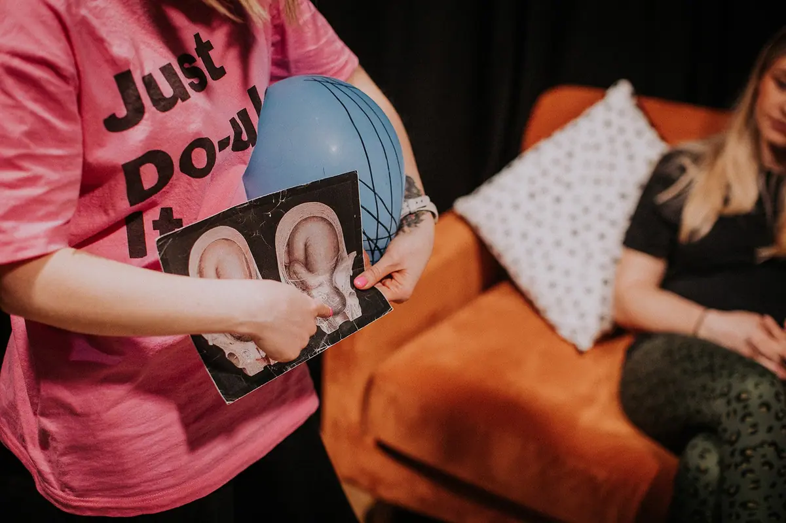

Hypnobirthing
Evidence-based techniques to help you release fear, trust your body and step into birth feeling genuinely excited — not terrified.

It's the name that lets it down
Hypnobirthing sounds like some ‘hippy’ thing that only people having home births use, or like it's just breathing. It is so much more than that — and none of it involves swinging clocks.
It is a complete birth preparation course, built on four things that work together. The breathing everyone has heard about is only the last of them.
It's getting informed about birth
Learning how birth actually works — the hormones involved, how to choose your birth place, how your environment helps or hinders the process, the role of the birth partner, the stages of labour, positions that help your baby find their way, and how to write a birth plan. Most of us haven't been at many births, so you simply won't know this unless someone tells you. The more you know, the more prepared you feel.
It's a change of mindset
Knowing what your body is doing, and how, helps you see birth as a bodily function like any other — which takes a lot of the fear away. Between getting informed and taking in positive information about birth, you can shift from a mindset full of what might ‘go wrong’ to one that expects birth to go right.
It's learning decision-making tools
Knowing your rights, and knowing where to get reliable information, helps you feel confident making the decisions needed to birth your baby. Just knowing the questions to ask — including whether it's safe to take 30 minutes to decide — can make an enormous difference. Nobody wants to make a decision in a rush when there was time to think it through.
And then the tools you've heard about
Breathing, visualisation, affirmations, relaxation, hypnobirthing tracks and anchoring. They are an incredible way to prepare and to stay comfortable — but on their own, without everything above, they are not enough. Together, you've got this.
The tools you'll actually use
Use all of them, throughout pregnancy and in birth, and see how calm you can feel — in any kind of birth.
Breathing techniques
Big, even breaths keep oxygen flowing so your uterus can do its job as efficiently and comfortably as possible. They also give you something else to focus on. Simple — but practise them in pregnancy and you will feel the benefit on the day.
Visualisation
A way of almost practising birth before it happens. Picturing how you would like your birth to go helps you feel more confident in your plans, and tricks your mind into thinking it is nothing new when labour starts for real.
Affirmations
Using the law of repetition to convince your brain to believe something. Instead of "I don’t want to tear", you say "my body will stretch to accommodate my baby". After a while it sinks in, and confidence follows.
Relaxation
We rarely spend time doing absolutely nothing, so our neocortex — the rational, thinking part of the brain — is almost never switched off. We very much want it out of the way during labour. Practising relaxation in pregnancy makes it far easier to relax on cue.
Hypnobirthing tracks
Written by hypnotherapists to induce calm, and full of encouragement about how capable you and your body are. Do not worry if you fall asleep listening — it still goes in. Just never while driving.
Anchoring
Cues your brain learns to associate with relaxation — a room spray, an essential oil, a blanket, a particular playlist. Use them while you practise, then bring them to your birth space and they help you relax wherever you are.
What does the evidence actually say?
Hypnobirthing isn't about guaranteeing a pain-free birth, avoiding interventions or promising a particular type of birth. The evidence suggests something much more useful: hypnosis and relaxation-based techniques can help you feel calmer, more confident and more positive about your birth, while giving you practical tools for managing fear, anxiety and sensation during labour.
The evidence around medical interventions is less clear. A 2024 systematic review and meta-analysis of 2,937 women across six randomised controlled trials found no statistically significant reduction in epidural or other pharmacological pain relief.
And that's important. Hypnobirthing isn't a promise that you won't need pain relief. It's about giving you another set of tools — breathing, relaxation, visualisation, self-hypnosis, understanding what's happening in your body, working with your partner, and staying grounded when things don't go to plan.
Because birth isn't predictable. But feeling informed, prepared and supported can make a huge difference to how you experience it. You don't have to birth without pain relief to have used hypnobirthing successfully — you can use these tools at home, in a birth centre or on a labour ward, alongside an epidural, an induction or a caesarean birth.
The goal isn't a perfect birth. It's feeling like you have the tools, knowledge and confidence to navigate yours.
Reductions in fear and perceived pain, and improvements in overall experience of childbirth.
Fernández-Gamero et al. (2024) — systematic review of 7 randomised controlled trials
Improvements in antenatal depression reported by the majority of included studies, though researchers noted a need for more consistent methods.
Betriana et al. (2025) — systematic review & meta-analysis
Potential benefits for anxiety, confidence and emotional wellbeing in pregnancy and after birth.
Catsaros & Wendland (2022) — systematic review
All four reviews are available on PubMed.
Book a Power Hour
You've read the guides. You've Googled. You've got questions. Bring your birth plan, induction options, previous birth experience or whatever is currently making you go “hang on… what?”, and we'll work through it together.
Curious what's covered each week?
Read the full session-by-session breakdown of the hypnobirthing course.
Hypnobirthing FAQs
The ideal time to start is from 20-30 weeks gestation, as this gives you enough time to practise the techniques before your birth. However, it's never too late — even starting at 36+ weeks will give you valuable tools. Some people do the course in early pregnancy and then revisit the materials closer to their due date.
Absolutely. Hypnobirthing techniques are incredibly effective for caesarean births — both planned and unplanned. The breathing, relaxation and mindset tools help you feel calm and in control in the theatre environment. Many of my clients specifically choose hypnobirthing because they're planning or preparing for a caesarean.
Yes, 100%. Hypnobirthing is about giving you tools and knowledge — not prescribing a particular type of birth. If you choose an epidural, that is absolutely your right and your choice. Hypnobirthing actually helps you make more informed decisions about pain relief because you fully understand your options.
It's highly recommended, but not essential. Birth partners play a really important role in hypnobirthing — they learn practical techniques to support you during labour and understand how to create the right environment. If your birth partner can't make some sessions, I can record them or provide notes. Single parents are also very welcome.
Hypnobirthing is wonderful for first-time parents because it gives you a thorough, evidence-based education alongside powerful relaxation tools. You'll understand exactly how birth works, what to expect at each stage, and how to work with your body rather than against it. Many of my clients say they wished they'd known this for a previous birth!
More questions? Visit the full FAQ page →
Ready to feel genuinely excited about birth?
Book your place on the next hypnobirthing course, or get in touch if the dates don't work for you.
Book the Course